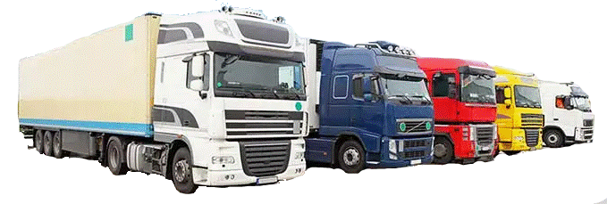

FORMACIÓN ONLINE
Formación Am¡car
CARRETILLA ELEVADORA
UD1. El oficio del operador de carretillas
UD2. La carretilla elevadora
UD3. Mecánica y mantenimiento de la carretilla
UD4. Manejo de carretillas elevadoras
UD5. Simbología
UD6. Seguridad en la conducción de carretillas
UD7. Ergonomía en la conducción de carretillas
UD8. Normativa aplicable
OBJETIVO:
Adquirir las competencias y habilidades necesarias para la correcta conducción y manejo de carretillas elevadoras con control de las cargas total y seguridad del area
MODALIDAD:
ONLINE/PRESENCIAL 10H + PRÁCTICAS
CARRETILLA ELEVADORA

formación Am¡car
ITC MINERA
1. Definición de los trabajos.
2. Técnicas preventivas y de protección específicas.
3. Equipos, herramientas o medios auxiliares.
4. Control y vigilancia sobre el lugar de trabajo y su entorno.
5. Interferencias con otras actividades.
6. Normativa y legislación.
OBJETIVO:
Formar y capacitar a los trabajadores del sector minero en base a la regulación de la formación profesional mínima en materia de seguridad y salud laboral que deben poseer los que desempeñan su trabajo habitual en centros de trabajo adscritos a actividades mineras. MODALIDAD:
Presencial 20H
ITC MINERA

Formación Am¡car
ITC SILICE Y POLVO
Tema 1. Riesgos para la salud por exposición a polvo y SCR.
Tema 2. Materias manipuladas y riesgo de puesta en suspensión.
Tema 4. Control del riesgo: Las mediciones.
Tema 5. Medidas de protección contra el polvo y la SCR.
Tema 6. Equipos de protección respiratoria: uso, ajuste y mantenimiento.
Tema 7. Buenas y malas prácticas preventivas
Tema 8. Derecho a la información y participación de los trabajadores.
OBJETIVO:
Prevenir las enfermedades profesionales causadas por polvo y SCR de los trabajadores expuestos en la industria de rocas y minerales industriales en procesos de extracción, elaboración y manipulado, haciendo el uso adecuado de las medidas de protección colectivas e individuales.
MODALIDAD:
10 HORAS
ITC SILICE Y POLVO

Formación Am¡car
OPERADOR DE RETROEXCAVADORA Y PALA CARGADORA
MODULO I: Retroexcavadora.
MODULO II: Pala cargadora.
MODULO III: Ergonomía y construcción: trabajo en zanjas.
MODULO IV: Técnicas de prevención
OBJETIVO:
Adquirir las competencias y habilidades necesarias para la correcta conducción y manejo de pala cargadora y retroexcavadora, potenciar la seguridad en el uso de maquinaria y cargas según las normas de prevención de riesgos.
MODALIDAD:
ONLINE/PRESENCIAL 10H + PRÁCTICAS
OPERADOR DE RETROEXCAVADORA Y PALA CARGADORA

Formación Am¡car
GRÚA PLUMA
UD1. Prevención de riesgos en la grúa.
UD2. Sistemas de seguridad del equipo para la limitación de cargas.
UD3. El cabrestante y sus accesorios.
UD4. Útiles de enganche.
UD5. Riesgo eléctrico.
UD6. Recomendaciones de seguridad frente a otros trabajos y riesgos.
UD7. Señales para trabajar con la grúa.
UD8. Equipos de protección individual
OBJETIVO:
Adquirir las competencias y habilidades necesarias para el manejo de la grúa pluma respetando la normativa y utilizando los EPIIS necesarios para evitar riesgos.
MODALIDAD:
ONLINE/E-LEARNING 12H + PRÁCTICAS
GRÚA PLUMA

Formación Am¡car
OPERADOR PLATAFORMAS MÓVILES
UD1. Las plataformas móviles de personal.
UD2. Seguridad en el manejo de los PEMP.
UD3. Riesgos y medidas de prevención durante el manejo de los PEMP.
UD4. Mantenimiento de las PEMP.
OBJETIVO:
Adquirir las competencias y habilidades necesarias para manejar plataformas elevadoras móviles de personal (PEMP) en condiciones de seguridad.
MODALIDAD:
ONLINE/E-LEARNING 12H + PRÁCTICAS
OPERADOR PLATAFORMAS MÓVILES

Formación Am¡car
OPERADOR DE CARRETILLA TELESCÓPICA (MANITOU)
Tema 1. Introducción
Tema 2. Definición
Tema 3. Partes manipuladora telescópica
Tema 4. Tipos y clasificación
Tema 5. Usos
Tema 6. Normativa de aplicación
Tema 7. Accidentes más frecuentes
Tema 8. Prevención de accidentes y riesgo
Tema 9. Manuales
Tema 10. Placas
Tema 11. Mantenimiento e inspección
OBJETIVO:
Adquirir las competencias y habilidades necesarias para realizar gestiones de operador y manipulador telescópica y su correcto funcionamiento con el fin de evitar situaciones de riesgo.
MODALIDAD:
ONLINE/E-LEARNING 10H + PRÁCTICAS
OPERADOR DE CARRETILLA TELESCÓPICA (MANITOU)

Formación Am¡car
PRL MOVIMIENTOS DE TIERRA (MINI PALA Y ORUGA)
Tema 1. Técnicas preventivas
Tema 2. Medios auxiliares, equipos y herramientas
Tema 3. Verificación, identificación y vigilancia de la zona de trabajo
Tema 4. Interferencias entre actividades
Tema 5. Derechos y obligaciones
Tema 6. Primeros auxilios y medidas de emergencia.
OBJETIVO:
Adquirir conocimientos preventivos básicos sobre los riesgos inherentes a los vehículos y maquinaria para el movimiento de tierras más utilizados en la construcción, su utilización y las técnicas preventivas específicas de aplicación..
MODALIDAD:
ONLINE/E-LEARNING 20H + PRÁCTICAS
PRL MOVIMIENTOS DE TIERRA (MINI PALA Y ORUGA)

Formación Am¡car
CONDUCCIÓN EFICIENTE EN VEHÍCULOS INDUSTRIALES
UD1. Consumo de energía y emisiones al medio ambiente de los vehículos industriales.
UD2. Nociones sobre motores y vehículos.
UD3. La actitud del conductor.
UD4. Control de los elementos del vehículo y conducción.
UD5. Conducción eficiente.
OBJETIVO:
Conocer y aplicar las diferentes técnicas de conducción eficiente al manejar cualquier vehículo industrial.
MODALIDAD:
ONLINE/E-LEARNING 30H + PRÁCTICAS
CONDUCCIÓN EFICIENTE EN VEHÍCULOS INDUSTRIALES

Formación Am¡car
CONDUCCIÓN EFICIENTE
UD1. Consumo de energía y emisiones al medio ambiente.
UD2. La actitud del conductor.
UD3. Conducción eficiente desde el punto de vista del vehículo.
OBJETIVO:
Conocer las diferentes técnicas de conducción Y mejorar aspectos relacionados con el consumo de carburante para reducir al máximo el consumo de combustible con diferentes habilidades.
MODALIDAD:
ONLINE/E-LEARNING 12H + PRÁCTICAS
CONDUCCIÓN EFICIENTE

CAPACITACIÓN TRANSPORTISTA
UD1. Elementos del derecho privado
UD2. El empresario mercantil
UD3. Derecho social
UD4. Derecho fiscal
UD5. Gestión comercial y financiera
UD6. Normas de explotación y técnicas
UD7. Seguridad en carretera
OBJETIVO:
Obtención del título acreditativo que reconoce a sus titulares la capacidad para poder ejercer tanto la profesión de transportista de mercancías de servicio público (o por cuenta ajena), como la de Operador de Transporte.
MODALIDAD:
ONLINE/MIXTO 100H
Formación Am¡car
CAPACITACIÓN TRANSPORTISTA
UD1. Elementos del derecho privado
UD2. El empresario mercantil
UD3. Derecho social
UD4. Derecho fiscal
UD5. Gestión comercial y financiera
UD6. Normas de explotación y técnicas
UD7. Seguridad en carretera
OBJETIVO:
Obtención del título acreditativo que reconoce a sus titulares la capacidad para poder ejercer tanto la profesión de transportista de mercancías de servicio público (o por cuenta ajena), como la de Operador de Transporte.
MODALIDAD:
ONLINE/MIXTO 100H
CAPACITACIÓN TRANSPORTISTA

Formación Am¡car
PRL MAQUINARIA AGRÍCOLA
1. CONCEPTOS BÁSICOS SOBRE SEGURIDAD Y SALUD EN EL TRABAJO. MARCO NORMATIVO.
2. RIESGOS GENERALES Y SU PREVENCIÓN.
3. RIESGOS ESPECÍFICOS EN MAQUINARIA.
4. MEDIDAS PREVENTIVAS APLICADAS A MAQUINARIA AGRÍCOLA.
5. PREVENCIÓN DE RIESGOS CON MAQUINARIA AGRÍCOLA.
6. LA SEGURIDAD EN LA MAQUINARIA AGRÍCOLA
OBJETIVO:
Identificar cuáles son los riesgos que conlleva una mala actuación en la utilización de maquinaria agrícola, aplicando los procedimientos adecuados para un uso seguro de la maquinaria.
MODALIDAD:
ONLINE 20H
PRL MAQUINARIA AGRÍCOLA

Formación Am¡car
PRL GENÉRICO
Bloque I: Conceptos básicos sobre seguridad y salud en el trabajo.
Bloque II: Riesgos generales y específicos. Prevención y protección.
Bloque III: Riesgos específicos y su prevención. Genéricos.
Bloque IV: Elementos básicos de gestión de prevención de riesgos.
Bloque V: Primeros auxilios.
OBJETIVO: Identificar conceptos básicos sobre seguridad y salud y puedan conocer el marco normativo general que rige la actividad en este aspecto.
MODALIDAD:
PRESENCIAL/ONLINE 60H
PRL GENÉRICO

Formación Am¡car
EQUIPOS PROTECCIÓN INDIVIDUAL
Tema I: Introducción
Tema II: Aspectos generales sobre EPI’S
Tema III: Clasificación de EPI’S
Tema IV: Selección de EPI’s
Tema V: Elementos auxiliares.
OBJETIVO: Identificar los diferentes equipos de protección individual a utilizar en cada tipo de trabajo y aplicar conocimientos adquiridos en este curso para promover el uso adecuado de los equipos de protección individual.
MODALIDAD:
ONLINE 10H
EQUIPOS PROTECCIÓN INDIVIDUAL

Formación Am¡car
MANIPULADOR DE ALIMENTOS
Tema I: Introducción
Tema II: Higiene alimentaria
Tema III: Contaminación de los alimentos.
Tema IV: Enfermedades transmisión alimentaria.
Tema V: Conservación y almacenamiento.
Tema VI: Limpieza e higiene de manipuladores.
Tema VII: Sistema de control APPCC
Tema VIII: Ley de información (alérgenos)
OBJETIVO: Proporcionar los conocimientos básicos en cuanto a la manipulación de alimentos (fabricación, procesado, envasado, almacenamiento, transporte, distribución y comercialización de los alimentos)
MODALIDAD: ONLINE 10H